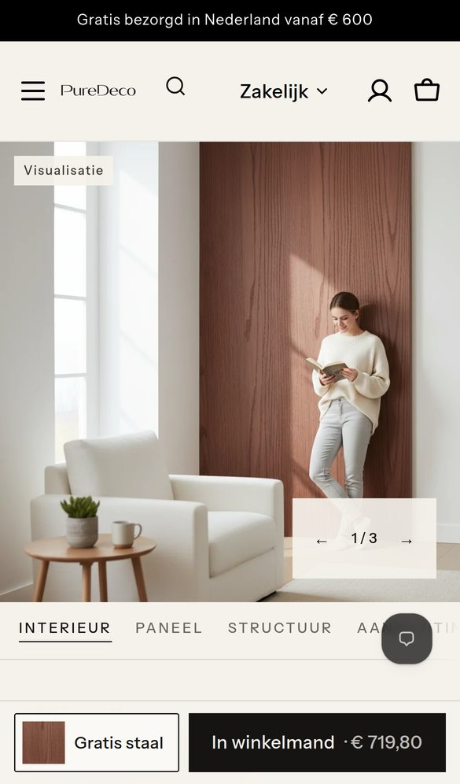
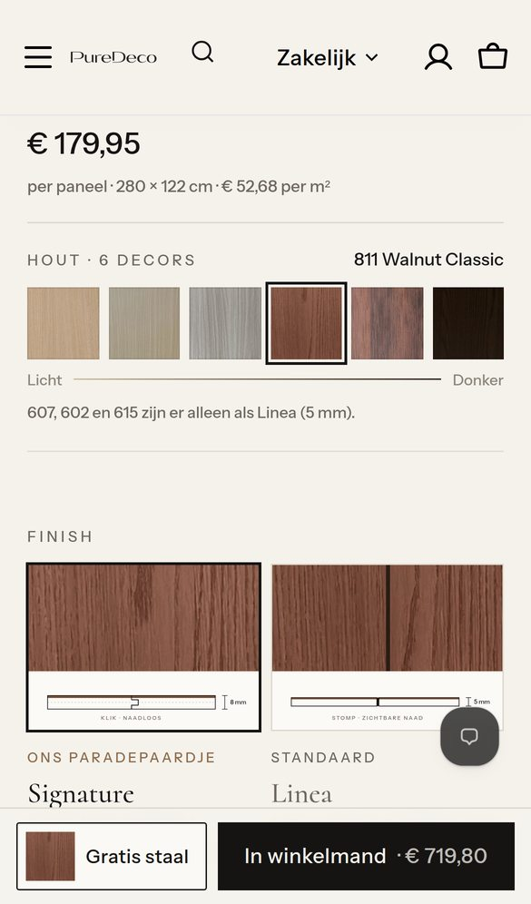
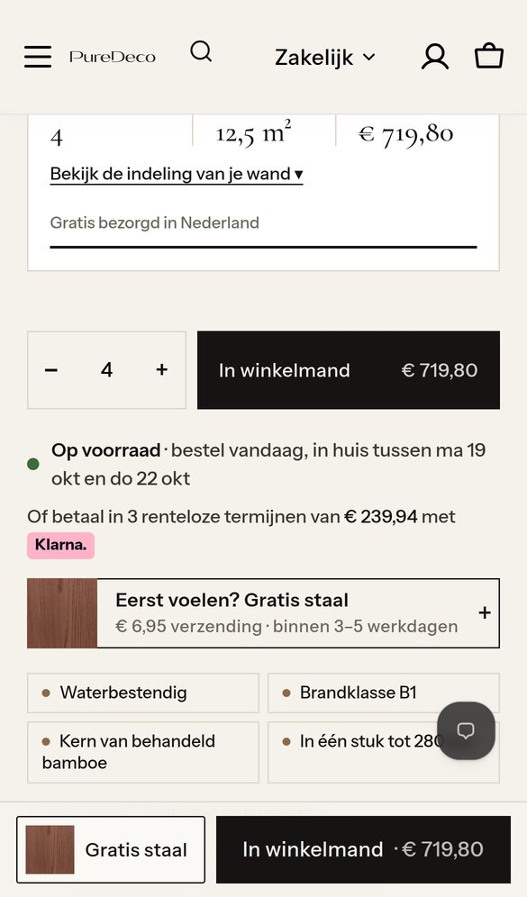
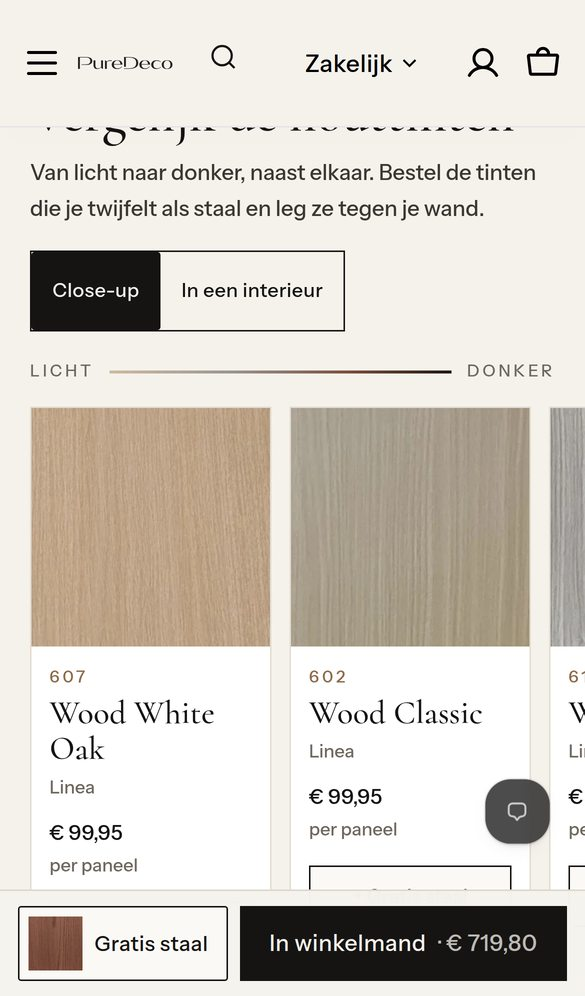
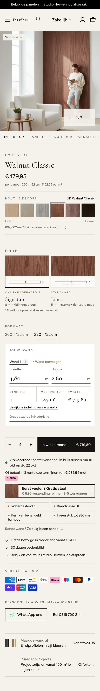
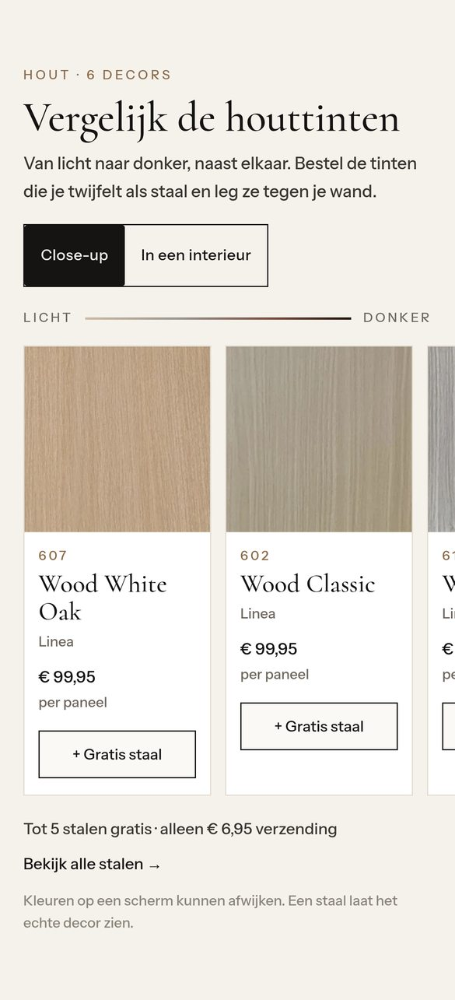
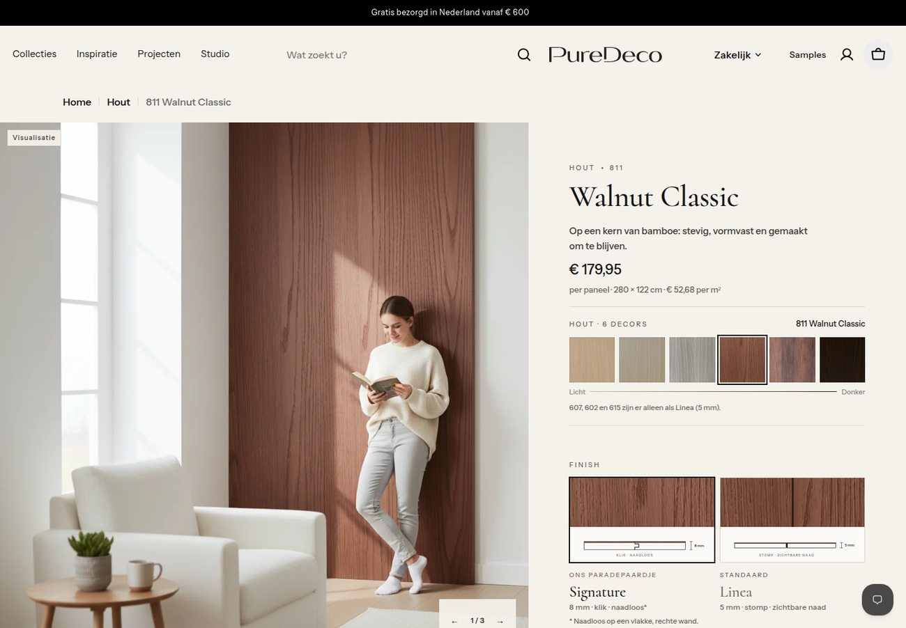
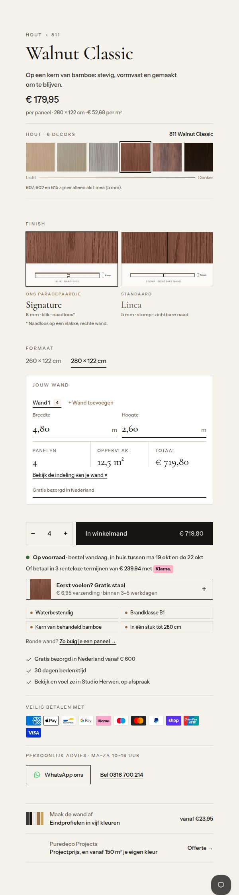
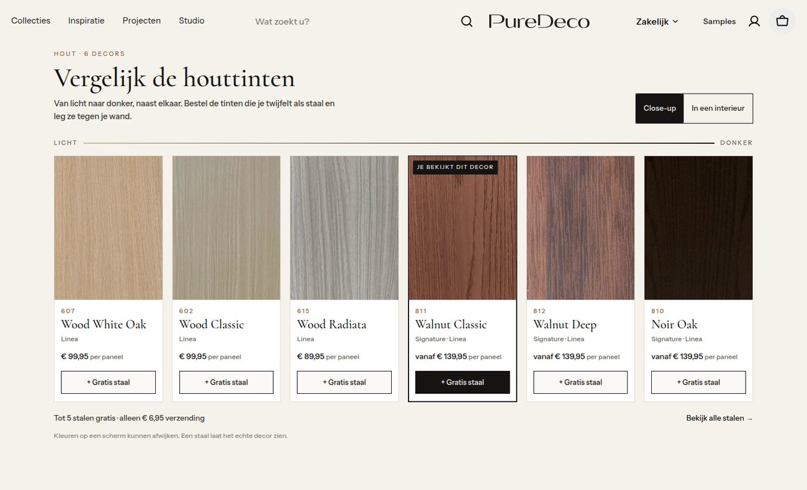

Artboard · uitwerking optie E · gesimuleerd op de echte H1-test-pagina · niets aangepast
Dit is de uitwerking van jouw keuze: optie E met de vaste koopbalk, de decorkiezer direct onder de prijs (811 vóór 812) en de finishkaarten met de tekening van klik en stompe naad. Alle schermen zijn de echte H1-test-pagina van 811 Walnut Classic. In de simulatie is een wand van 4,80 × 2,60 m ingevuld. Daaronder staan extra aanbevelingen om de pagina af te maken.

1Eerste scherm. Compacte kop met zoekicoon, vierkante foto met het label Visualisatie, de koopbalk met een mini-staal van 811 en het bedrag voor de hele wand.

2Onder de prijs: de decorkiezer. 607 · 602 · 615 · 811 · 812 · 810, met daaronder "607, 602 en 615 zijn er alleen als Linea (5 mm)". Daarna de finishkaarten met tekening.

3Jouw wand → knop. 4 panelen, 12,5 m², € 719,80 en "Gratis bezorgd in Nederland". Daarna "In winkelmand € 719,80", de levertijd, Klarna, het staal en de sterke punten.

4Vergelijk de houttinten. Met dezelfde volgorde als de decorkiezer en een knop "+ Gratis staal" per kaart.

Vaste koopbalk, altijd onderin beeld.
De interieurbeelden van 811 zijn gegenereerd. Dat staat er nu eerlijk bij, zoals afgesproken voor alle visualisaties.
€ 179,95 per paneel · 280 × 122 cm · € 52,68 per m².
Zes echte stalen. De omlijnde is 811. Tikken opent het andere decor via de bestaande link.
Signature (klik · naadloos) en Linea (stomp · zichtbare naad), zoals nu in H1-test.
Compact. De tekening van de wand klapt open via "Bekijk de indeling".
Daarna de levertijd, Klarna, het gratis staal, de sterke punten, de zekerheden, de betaalmethodes, WhatsApp en Bel, de eindprofielen en Projects.

Verderop: Vergelijk de houttinten, met de regel "Kleuren op een scherm kunnen afwijken."


Koopkolom desktop, van boven tot onder
Dezelfde volgorde als op mobiel. Op desktop blijft de bestaande koopbalk die verschijnt na het scrollen, want de knop staat hier al hoog in beeld. De galerij links scrolt mee, zodat er geen lege ruimte naast de lange kolom ontstaat.

Om het perfect te maken
Groen kan ik direct in het thema meenemen. Oranje is een kleine keuze van jou. Rood is een winkelinstelling of app, en daarvoor vraag ik altijd eerst toestemming.
Wie 4,80 × 2,60 m invult en dan 812 aantikt in de decorkiezer, ziet daar meteen 4 panelen en het totaal. De klant hoeft niets opnieuw in te vullen.
Na "Gratis staal" verschijnt kort in de balk: "811 in je stalenmandje · 1 van 5". Daaronder staat de buurtint als suggestie: "Ook 812 Walnut Deep erbij?"
Op elke gegenereerde interieurfoto, in de galerij en in "In een interieur". Echte foto's krijgen geen label.
Geen groot leeg vlak meer tot de film laadt.
De decorkiezer en het vergelijkingsblok zijn gewone links tussen de 6 houtdecors. Goed voor Google, en de URL's blijven gelijk.
De stalen zijn kleine afbeeldingen die pas laden als je erbij komt. Elk staal heeft een naam voor schermlezers en een zichtbare focusrand. Er komt geen extra app bij.
Nu staan er 11 logo's, ook UnionPay en Maestro. Mijn voorstel: de bekendste eerst (Klarna, Apple Pay, PayPal, Bancontact, Visa, Mastercard) en op mobiel één rij.
De volgorde 607 · 602 · 615 · 811 · 812 · 810 komt in een lijst in de thema-editor. Zo kun je hem later zelf aanpassen, of een nieuw decor op de goede plek zetten.
iDEAL staat niet tussen de betaallogo's, terwijl het in Nederland veel gebruikt wordt. Het kan zijn dat iDEAL niet aan staat. Ik kijk dat alleen na als jij akkoord geeft.
Het thema toont sterren zodra er reviews zijn, maar die zijn er nu niet. Mijn advies is een automatisch reviewverzoek na levering. Er komen nooit verzonnen reviews.
Die tekst komt van een voorraad-app, terwijl het thema zelf al een melding heeft. In het thema verberg ik hem als het paneel op voorraad is. De app helemaal uitzetten is jouw keuze.
Een rij "Puredeco in het echt" met foto's van klanten of Projects. Dat is het sterkste bewijs naast de visualisaties, zodra er beelden zijn.
Graag je akkoord
Na je akkoord bouw ik alles in H1-test, test ik mobiel en desktop, en stuur ik je de schermen.